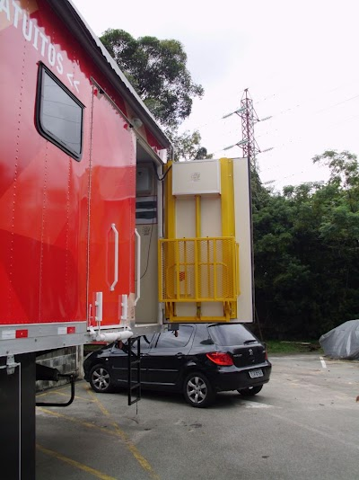
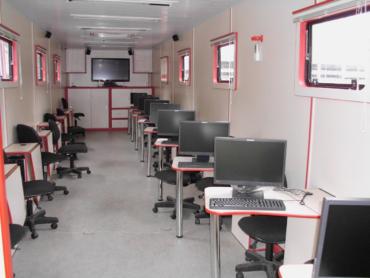
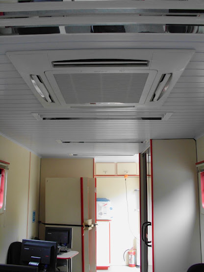

No dia 8 de março, Marcelo Braz tinha compartilhado o lançamento do Centro de Inclusão Digital Móvel, em Osasco. Ontem ele compartilhou mais um recorte dessa história: ele foi conhecer a carreta com os computadores que vai itinerar pela periferia de Osasco.




Oficialmente chamado Centro de Inclusão Digital Móvel, o projeto foi apelidado de Cidão. Bem bacana e com máquinas legais para tocar oficinas de vários tipos. Se não tiver como ligar eletricidade no local, tem um gerador acoplado - infelizmente ainda a diesel, mas bora pensar um com biodiesel no mínimo. Ainda não foi instalada a tela externa para passar filmes, mas isso vai acontecer logo. Já foi configurado um Conselho Gestor com gestores da prefeitura e sociedade civil. Sendo sociedade civil com pessoas da cultura da quebrada - hiphop, da economia solidária e ativistas sociais. São duas dessas, uma para zona norte e outra para zona sul pois a cidade é dividida por um rio e uma rodovia. Passando a burocracia infernal vai começar a circular.